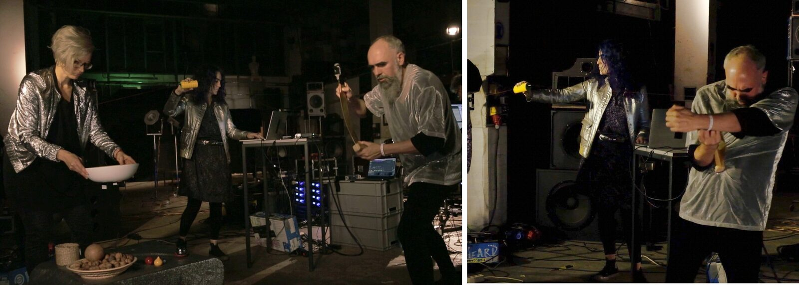
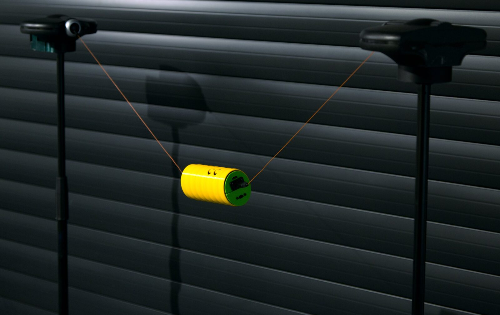

Bend-Rotation Nr. 3: Improvisation for Embodied Gestures Instruments
PROJECT DESCRIPTION
Bend-Rotation nr.3 is an improvisation for musical interfaces especially designed to emphasise two energy-motion models. In our research project ‘embodied gestures’ we discuss the beneficial aspects of incorporating energy-motion models as a design pattern in musical interface design. These models can be understood as archetypes of motion trajectories which are commonly applied in the analysis and composition of acousmatic music.


Two captures of an improvisation for three Embodied Gestures Instruments (2020)
We argue that a fruitful path for approaching musical interface design -especially towards the creation of gestural music- could be the incorporation of archetypal energy-motion models as design patterns. Annette Vande Gorne [1] developed her acousmatic theory of energy-motion models building on previous work made by Schaeffer, Bayle and Reibel. Energy-motion models are motion archetypes inspired by natural actions like oscillation, friction, flux, pressure, etc. Citing Anderson [2], “through the energy model, the composer can develop a voluntary awareness of the internal stimulus which motivates and governs the energy flow unfolded through physical movement that results in gesture. Gesture would be articulated by and at the service of a particular energy model”. Vande Gorne methodically identified [1] the following energy models: Percussion-Resonance, Friction, Accumulation of Corpuscles, Oscillation, Swaying/Swinging, Rebound, Flux, Pressure-Deformation/Flexion, Swirls and Rotations and Spiral.
After having run a large study for understanding a listener’s spontaneous rendering of form and movement [3], we built a number of digital instruments especially designed to emphasise a particular energy-motion profile. Our hypothesis was that such interfaces would be especially suitable to emphasise a performer’s gestural embodiment within an instrument. For instance, for performing a sound passage made from the circulation of oscillatory sonic movements in space, we have designed musical interfaces affording by themselves, and through their physical affordances, similar “oscillatory” physical gestures to their performers. We repeated this process for a number of motion models (e.g. granularity, friction and flexion). The result was the creation of a small ensemble of interfaces following this paradigm. In figures 1 to 4 some of these instruments are shown.


Figure 1: Oscillatory interface

Figure 2: Granular Interface
Finally, we carried out a practice-based evaluation through the commission of musical performances and compositions to external collaborators. The incorporation of these energy-motion models was considered as an idiomatic solution within the field of acousmatic music. The apparent simplicity of our interfaces constituted a meaningful creative constraint stabilising crucial aspects of interaction, therefore fostering musical exploration and inventiveness.

Figure 3: Friction Interface

Figure 4: Flexion Interface
With this concert proposal we would like to present the artistic potential of this design paradigm to the NIME community. A duo of performers will improvise an acousmatic piece playing the embodied gestures instruments.
PROGRAM NOTES
In the ‘embodied gestures’ project we discuss the beneficial aspects of incorporating energy-motion models as a design pattern in musical interface design. These models can be understood as archetypes of motion trajectories which are commonly applied in the analysis and composition of acousmatic music. Four interfaces were especially designed to emphasise four particular energy-motion profiles: oscillation, granularity, friction and flexion. In this performance, which will take the format of an improvisation, two musicians are exploring the physical and musical gestures suggested from the interfaces’ affordances.
PERFORMANCE REQUIREMENTS
Equipment:
The concert can be adapted to any speaker configuration from a stereo layout to a multichannel setup. We would like to use a multichannel system if it is available.
If the Front Of House speakers are far from the performers, we will need two audio monitors on stage.
Space:
The work would be suitable for a traditional concert stage or a gallery.
Feasibility:
The musicians involved are professional performers who have presented the same live act numerous times in the last two years. In the media section of this document we are attaching an example of a live performance.
Duration:
The improvisation will have a duration of 9 to 10 minutes.
MEDIA
Live recording (May 2020) performing on an acousmonium (24 speakers):
Video documentary about the embodied gestures research project:
Citations
A. Vande Gorne. 2018. Treatise on Writing Acousmatic Music on Fixed Media. Volumen 9 de Lien : revue d'esthétique musicale,
↩
Volúmenes 9-2018 de Musiques & Recherches.E. Anderson. 2011. Materials, meaning and metaphor: Unveiling spatio-temporal pertinences in acousmatic music. Doctoral thesis, City University London.
↩- ↩